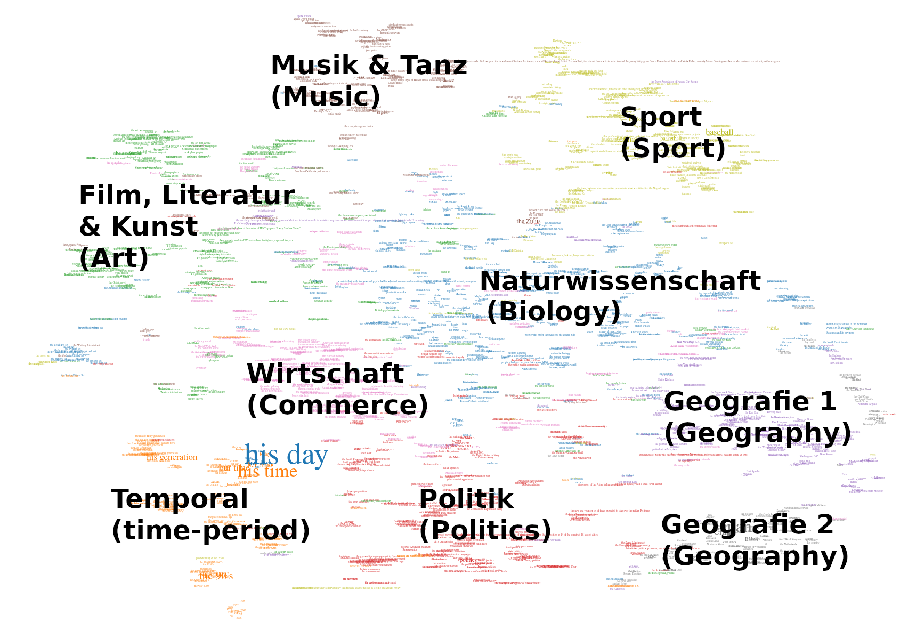

<!doctype html>
<html lang="en">
  <head>
    <meta charset="utf-8" />
    <meta name="viewport" content="width=device-width, initial-scale=1.0, maximum-scale=1.0, user-scalable=no" />

    <title>Proper Names as a Rhetorical Tool: A Digital Foray into Vossian Antonomasia (16 January 2025)</title>

    <link rel="stylesheet" href="../revealjs5/dist/reset.css" />
    <link rel="stylesheet" href="../revealjs5/dist/reveal.css" />
    <link rel="stylesheet" href="../revealjs5/dist/theme/serif.css" id="theme" />

    <!-- adjustments for serif.css -->
    <link rel="stylesheet" href="custom.css" />

    <!-- Theme used for syntax highlighted code -->
    <link rel="stylesheet" href="../revealjs5/plugin/highlight/monokai.css" id="highlight-theme" />
  </head>
  <body>
    <div class="reveal">
      <div class="slides">
        <section data-markdown="" data-separator="^\n---\n" data-separator-vertical="^\n--\n" data-charset="utf-8">
<script type="text/template">

<!-- .slide: data-background-color="white" -->

### Proper Names as a Rhetorical Tool
#### A Digital Foray into Vossian Antonomasia

<!-- .element width="400px;" -->

Prof. Dr. Frank Fischer<!-- .element: style="font-size:0.8em;" -->

Freie Universität Berlin<!-- .element: style="font-size:0.7em;" -->

<br />This presentation: <!-- .element: style="font-size:0.6em;" --> **[bit.ly/s161](https://bit.ly/s161)**

<br />University of Stuttgart &nbsp;·&nbsp; 16 January 2025<!-- .element: style="font-size:0.8em;" -->

--

### Contents

<br />

1. [Introduction](#/1)
2. [Vossian Antonomasia](#/2)
3. [Using Data, Generating Data](#/3)
4. [Analyses](#/4)
5. [Conclusion](#/5)

---

## 1. Introduction

--

### Example 1/4

<!-- .element width="640px" -->

= Vittorio Hösle (Source: [welt.de](https://www.welt.de/politik/ausland/article120037085/Papst-ehrt-den-Boris-Becker-der-Philosophie.html), 2013)

--

### Example 2/4

<!-- .element width="640px" -->

= Alice Schwarzer (Source: [cicero.de](http://www.cicero.de/berliner-republik/alice-schwarzer-der-erich-honecker-des-feminismus/56963), 2014)

--

### Example 3/4

<!-- .element width="480px" -->

= Magnus Carlsen (Source: [dw.com](https://www.dw.com/de/der-mozart-des-schachs/a-36500634), 2016)

--

### Example 4/4

<!-- .element width="640px" -->

= Jim Koch (Source: [theatlantic.com](https://www.theatlantic.com/magazine/archive/2014/11/the-steve-jobs-of-beer/380790/), 2014)

---

## 2. Vossian Antonomasia
### Definition (1/3)

<!-- .element width="240px" -->

* First identified <!-- .element: style="font-size:0.7em;" --> as a distinct phenomenon by Gerhard Johannes Vossius (1577–1649) <br />(Image source: <a href="https://commons.wikimedia.org/wiki/File:Gerardus_Johannes_Vossius_(1577-1649),_by_Anonymous.jpg">Wikimedia Commons</a>)
* Cf. <!-- .element: style="font-size:0.7em;" --> [the relevant chapter in](https://books.google.com/books?id=q2OvgoX6ar8C&pg=PA193) im *Tractatus philologici de rhetorica, de poëtica, de artium et scientiarum […]*, 1697 (first published 1606)

--

### Definition (2/3)

“‘Vossian Antonomasia’ means […] to put a proper name in place of an appellative: the bearer of that proper name is a person or thing which, in history or mythology, represents an outstanding realisation of the quality indicated by the appellative. The exceptional person or thing is the archetype […], rediscovered in the new instance at hand. Typically, the archetype is brought out of its typological remoteness and into the present moment by <u>an atypological, updating marker</u> (pronoun, adjective, genitive), in any case via the (linguistic or situational) context […].”

Heinrich Lausberg: *Handbuch der literarischen Rhetorik. Eine Grundlegung der Literaturwissenschaft.* Vol 2. Munich: Hueber 1960. §581, p. 301. [[this page in the 3rd ed. 1990 on Google Books](https://books.google.com/books?id=IR8ru0joFKcC&pg=PA301); translation and emphasis mine]
<!-- .element: style="font-size:0.65em;" -->

--

### Definition (3/3)

<br />

* source → modifier → target
* “Wilhelm Busch [is] the Homer of the 19th century” ([NZZ, 30 May 2014](https://www.nzz.ch/schwellen-und-inseln-im-zeitfluss-1.18312462))
  * source: Homer
  * modifier: 19th century
  * target: Wilhelm Busch

--

<!-- .element width="560px" -->

Frank Fischer, Joseph Wälzholz: Jeder kann Napoleon sein. [On Vossian Antonomasia.] <br />In: Frankfurter Allgemeine Sonntagszeitung, 21 December 2014, p. 34.
<!-- .element: style="font-size:0.65em;" -->

--

### Preliminary Considerations for a Digital <br />Study of the Phenomenon

<br />

- Starting point: my own collection of examples (2009–2014)
- Previous research was not corpus-based
- Problem: Vossian antonomasia is a rare phenomenon
- No gold annotations (thus no recall scores can be determined)
- Consequently, we lack reliable knowledge about frequency, function, and distribution of the phenomenon

---

## 3. Using Data, Generating Data

<br />

### Example Corpus: “The New York Times”

<br />

- A corpus containing all NYT articles from 1987–2007 was available for research purposes (1.8 million articles)
- Reference: [Sandhaus 2008](https://doi.org/10.35111/77ba-9x74)

--

### Approaches

<br />

- Grammatical formalisation (“the … of …”) plus Named-Entity Recognition (via NLTK)
  - Problem #1: Unsatisfactory performance of the NER module
  - Problem #2: More complex grammatical cases in other languages (genitive not expressed by articles but by suffixes)
  - Problem #3: “the Church of England” etc. (though matching the grammatical pattern, semantically irrelevant)
- Breakthrough: leveraging personalities’ names via Wikidata as a positive list
  - Underlying assumption: source names for Vossian antonomasia should have a certain degree of fame and thus be recorded encyclopedically

--

### Workflow

<br />

- Use the Wikidata Toolkit to download the Wikidata dump
- Filter by the *instance of* property set to “human” (~ 2.8 million names)
- Perform sentence segmentation (NLTK) and extract sentences matching “the … of …” pattern
- Cross-check with Wikidata list
- Result: 3,753 candidates; after manual review, 2,646 remain (73.9% precision)
- First publication in *Digital Scholarship in the Humanities*

---

## 4. Analyses


The 39 most frequent sources for Vossian antonomasia in the NYT from 1987–2007. <br />Image sources: Wikimedia Commons (Property:P18 in Wikidata).<!-- .element: style="font-size:0.8em;" -->

--

### Analysis 1: The Sources

--

### Ranking (1/2)

| Frequency | Source |
|----------|--------|
| 68 | Michael Jordan |
| 58 | Rodney Dangerfield |
| 36 | Babe Ruth |
| 32 | Elvis Presley |
| 31 | Johnny Appleseed |
| 23 | Bill Gates |
| 21 | Pablo Picasso |
| 21 | Michelangelo |
| 21 | Donald Trump |
| 21 | Jackie Robinson |
| 21 | Madonna |

Individuals with &#62; 20 mentions as sources for Vossian antonomasia in the NYT, 1987–2007.
<!-- .element: style="font-size:0.65em;" -->

--

### Ranking (2/2)

| Frequency | Source |
|----------|--------|
| 21 | Madonna |
| 18 | Martha Stewart |
| 14 | Greta Garbo |
| 14 | Mother Teresa |
| 12 | Oprah Winfrey |
| 12 | Rosa Parks |
| 12 | Susan Lucci |
| 10 | Julia Child |

Women with &#62;= 10 mentions as sources for Vossian antonomasia in the NYT, 1987–2007.
<!-- .element: style="font-size:0.65em;" -->

--

### Interactive Data Visualisation


Timeline, newspaper section, metadata, images via Wikidata, KWIC search function, link to the full text.
<!-- .element: style="font-size:0.65em;" -->

URL: https://vossanto.weltliteratur.net/timeline
<!-- .element: style="font-size:0.65em;" -->

--

### Analysis 2: The Modifiers

--

### Quantification and Grouping of Modifiers

</br>

<!-- .element width="700px" -->

--

### Assigning Topics to Modifiers

</br>

- Creating semantic clusters using word embeddings
- Assigning topic areas to each cluster based on the following approach:
  - Modifiers tend to be short noun phrases (1–4 words)
  - “Classic” topic modelling fails due to the brevity of the phrases
  - Alternative method: WordNet and **WordNet Domains**:
    - Each word/synset from WordNet is assigned one or more domains (organised hierarchically)
  - Example:
    - quarterbacks, bull riding, harness track, BMX racing, golf, the Dolphins, … → Sports

--

<div style="display: flex; justify-content: space-between;">
  <div style="width: 48%;">
  <p style="text-align:left;">Reducing high-dimensional vectors to 2D for data visualisation</p>
  <ul>
    <li>PCA (linear)</li>
    <li>t-SNE (non-linear)</li>
    <li>UMAP (non-linear)</li>
    <li>IVIS (non-linear, neural-network based)</li>
  </ul>
  </div>
  <div style="width: 48%;">

  </div>
</div>

<br />

➜ [Web App](https://vossanto.weltliteratur.net/dhd2023/modifier.html)

--

### Insights

</br>

- Clear-cut clusters (culture, sports, geography)
- Special cluster: Temporal (not domain-specific)
- Many borderline cases, e.g., MTV (music vs. TV), Irish theaterland (geography vs. culture)
- Some clusters subdivide further (culture → music, art, literature, film/TV)

--

### Analyse 3: Referential Networks

--

### Vossian Circles and Chains

<br />


<br />

The longest *VA chain* in the NYT corpus: [interactive app](https://vossanto.weltliteratur.net/sighum2023/graph.html).
<!-- .element: style="font-size:0.65em;" -->

---

## 5. Conclusion

--

### Findings

<br />

- A humanities research question taken to new heights via Digital Humanities
- Fresh insights into the frequency, functions, distribution of this stylistic device, plus its circular and chain formations
- New data, tools, and apps for further exploration (everything is open source)
- Reusability potential
- Typical DH project: creative fusion of humanities and digital methods

--

### Current Status

<br />

- A fully automated end-to-end detection pipeline
- A Google [BERT](https://github.com/google-research/bert)-based model
- Fine-tuning: an additional layer classifying whether a sentence contains a Vossian antonomasia (0 or 1)
- Transfer to other languages via transfer learning

--

### Dissemination Strategies

<br />

- So far, eight peer-reviewed papers plus conference posters
- [Project website](https://vossanto.weltliteratur.net/)
- Various apps for exploring the dataset
- Code and data on GitHub and Figshare
- [Blog posts](https://weltliteratur.net/)
- Multiple [threads](https://twitter.com/umblaetterer/status/1097865223564869635) on social media
- Third-party bots ([Vossantian Times](https://mastodon.social/@vossantos))

--

### Related articles

- Fischer/Jäschke/Strötgen/Krotova @ [DHd 2017](https://doi.org/10.5281/zenodo.4646126)
- Schwab/Jäschke/Fischer/Strötgen @ [EMNLP 2019](https://doi.org/10.18653/v1/D19-1647)
- Fischer/Jäschke @ [DSH 2020](https://doi.org/10.1093/llc/fqy087)
- Schwab/Jäschke/Fischer @ [Frontiers in Artificial Intelligence 2022](https://doi.org/10.3389/frai.2022.868249)
- Schwab/Jäschke/Fischer @ [ICNLSP 2022](https://aclanthology.org/2022.icnlsp-1.33)
- Schwab/Fischer @ [DHd2023](https://doi.org/10.5281/zenodo.7715490)
- Schwab/Jäschke/Fischer @ [SIGHUM 2023](https://doi.org/10.18653/v1/2023.latechclfl-1.12)
- Schwab/Jäschke/Fischer @ [ICNLSP 2023](https://aclanthology.org/2023.icnlsp-1.10.pdf)<br /><br /><br />

### Project Website

https://vossanto.weltliteratur.net/

--

### Thank you!

<br />

### *

</script>
        </section>
      </div>
    </div>
    <script src="../revealjs5/dist/reveal.js"></script>
    <script src="../revealjs5/plugin/notes/notes.js"></script>
    <script src="../revealjs5/plugin/markdown/markdown.js"></script>
    <script src="../revealjs5/plugin/highlight/highlight.js"></script>
    <script>
      Reveal.initialize({
        hash: true,
        transition: 'fade',
        plugins: [ RevealMarkdown, RevealHighlight, RevealNotes ]
      });
    </script>
  </body>
</html>
